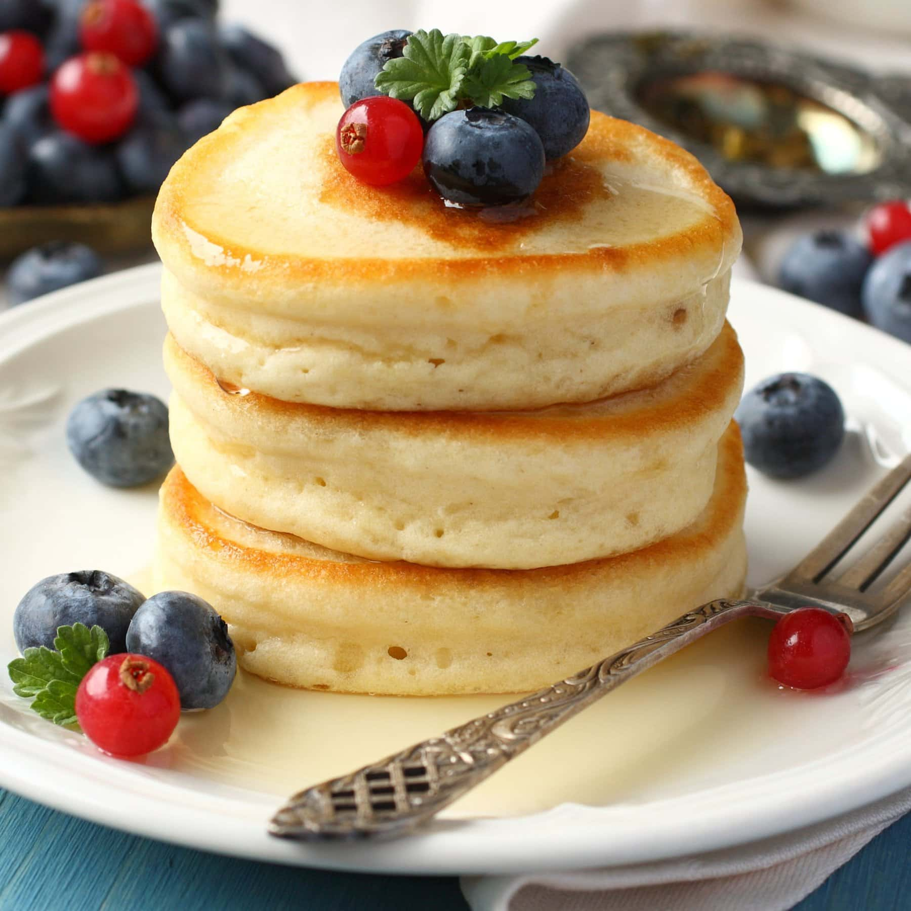

Fluffy Pancakes
Soft, fluffy pancakes perfect for breakfast.
Ingredients
- 1 1/2 cups all-purpose flour
- 3 1/2 tsp baking powder
- 1 tbsp sugar
- 1/2 tsp salt
- 1 1/4 cups milk
- 1 egg
- 3 tbsp melted butter
- 1 tsp vanilla (optional)
Directions
- Whisk flour, baking powder, sugar, and salt in a bowl.
- Whisk milk, egg, melted butter (and vanilla) in another bowl.
- Combine wet into dry; mix just until combined (don't overmix).
- Cook 1/4 cup batter on a lightly greased pan over medium heat.
- Flip when bubbles form; cook until golden.
- Serve with syrup or fruit.
Step 1: Gather Your Ingredients
Assemble all your ingredients. You'll need flour, baking powder, sugar, salt, milk, an egg, melted butter, and vanilla extract. Having everything measured and ready makes the process smooth. Let's make some delicious fluffy pancakes!
Step 2: Mix Dry Ingredients
In a large bowl, whisk together 1 1/2 cups flour, 3 1/2 teaspoons baking powder, 1 tablespoon sugar, and 1/2 teaspoon salt. The baking powder is key to fluffy pancakes, so make sure it's evenly distributed!
Step 3: Mix Wet Ingredients
In another bowl, whisk together 1 1/4 cups milk, 1 egg, 3 tablespoons melted butter, and 1 teaspoon vanilla. Mix until well combined. The wet ingredients should be smooth and well blended.
Step 4: Combine Batter
Pour the wet mixture into the dry ingredients. Fold everything together gently using a spatula. This is important: don't overmix! A lumpy batter is okay—overmixing creates tough pancakes. Lumps will smooth out during cooking.
Step 5: Cook the Pancakes
Heat a griddle or pan over medium heat and lightly grease it. Pour 1/4 cup batter for each pancake. Cook until bubbles form on the surface (about 2-3 minutes), then flip and cook the other side until golden brown. Beautiful golden pancakes!
Step 6: Serve and Enjoy
Stack your fluffy pancakes on a plate and serve immediately while warm. Top with your favorite toppings: maple syrup, fresh berries, whipped cream, or bananas. These homemade pancakes are comfort food at its finest. Breakfast is served!
Recipe Completed!
You finished the story mode. Ready to make another batch?